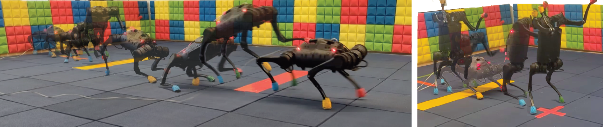

Laura Smith (1)J. Chase Kew (2)Tianyu Li (3)Linda Luu (2)Xue Bin Peng (4)Sehoon Ha (3)Jie Tan (2)Sergey Levine (1, 2)
(1) University of California, Berkeley(2) Google Research(3) Georgia Institute of Technology(4) Simon Fraser University

Abstract
Legged robots have enormous potential in their range of
capabilities, from navigating unstructured terrains to
high-speed running. However, designing robust controllers for
highly agile dynamic motions remains a substantial challenge
for roboticists. Reinforcement learning (RL) offers a promising
data-driven approach for automatically training such controllers.
However, exploration in these high-dimensional, underactuated
systems remains a significant hurdle for enabling legged robots
to learn performant, naturalistic, and versatile agility skills. We
propose a framework for training complex robotic skills by
transferring experience from existing controllers to jumpstart
learning new tasks. To leverage controllers we can acquire in
practice, we design this framework to be flexible in terms of
their source—that is, the controllers may have been optimized
for a different objective under different dynamics, or may require
different knowledge of the surroundings—and thus may be
highly suboptimal for the target task. We show that our method
enables learning complex agile jumping behaviors, navigating
to goal locations while walking on hind legs, and adapting to
new environments. We also demonstrate that the agile behaviors
learned in this way are graceful and safe enough to deploy in
the real world.
@article{
TWiRLSmith2023,
title={Learning and Adapting Agile Locomotion Skills by Transferring Experience},
author={Laura Smith and J. Chase Kew and Tianyu Li and Linda Luu and Xue Bin Peng and Sehoon Ha and Jie Tan and Sergey Levine},
year={2023},
eprint={2304.09834},
archivePrefix={arXiv},
primaryClass={cs.RO}
}